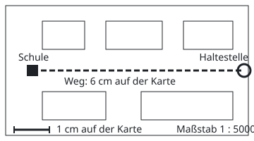
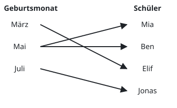
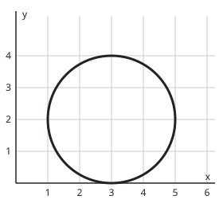
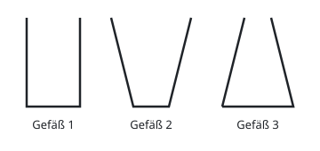
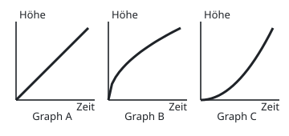

Medienübersicht
Alle Bilder, Audios und Videos dieser App mit ihrer Quelle und ihrer Lizenz.
Bilder

images/pfeiltabelle-postkarten.svg© CC-BY-4.0Verwendet auf: Dreisatz mit Pfeilen

images/dreisatz-ueber-eins.svg© CC-BY-4.0Verwendet auf: Dreisatz über 1

images/stadtplan-weg.svg© CC-BY-4.0Verwendet auf: Mit dem Maßstab rechnen

images/zimmerplan.svg© CC-BY-4.0Verwendet auf: Zeichnungen im Maßstab

images/pfeiltabelle-minuten.svg© CC-BY-4.0Verwendet auf: Proportionale Zuordnungen erkennen

images/rechtecke-gleiche-flaeche.svg© CC-BY-4.0Verwendet auf: Antiproportionale Zuordnungen

images/pfeildiagramm-schueler.svg© CC-BY-4.0Verwendet auf: Was eine Funktion ist

images/pfeildiagramm-monat.svg© CC-BY-4.0Verwendet auf: Was eine Funktion ist

images/graph-kreis.svg© CC-BY-4.0Verwendet auf: Funktionsterm, Graph und Mengen

images/vier-quadranten.svg© CC-BY-4.0Verwendet auf: Das Koordinatensystem mit negativen Zahlen

images/gefaesse.svg© CC-BY-4.0Verwendet auf: Situation, Tabelle und Graph

images/weg-zeit.svg© CC-BY-4.0Verwendet auf: Situation, Tabelle und Graph

images/fuellgraphen.svg© CC-BY-4.0Verwendet auf: Situation, Tabelle und Graph

images/steigungsdreieck.svg© CC-BY-4.0Verwendet auf: Das Steigungsdreieck